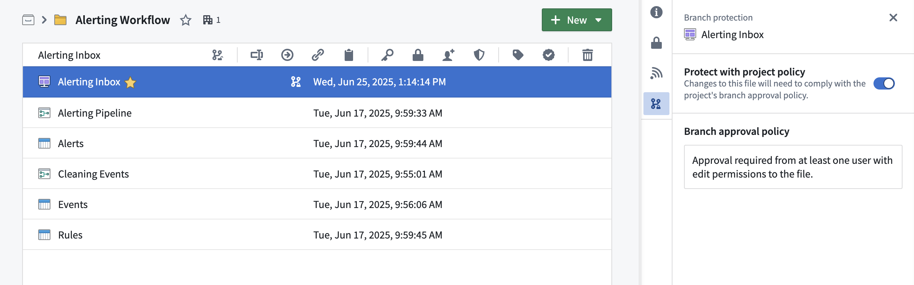
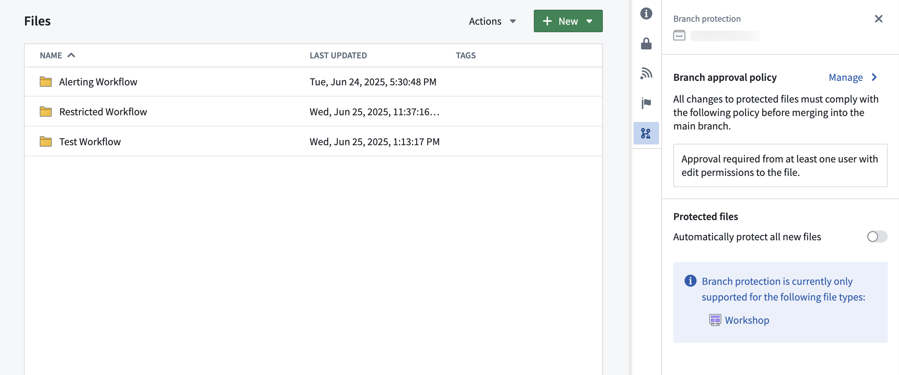
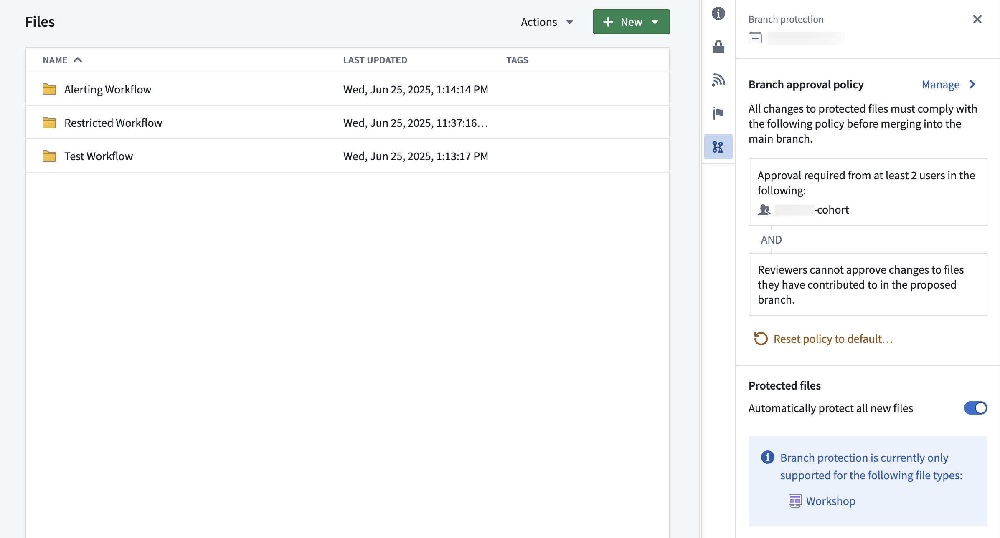
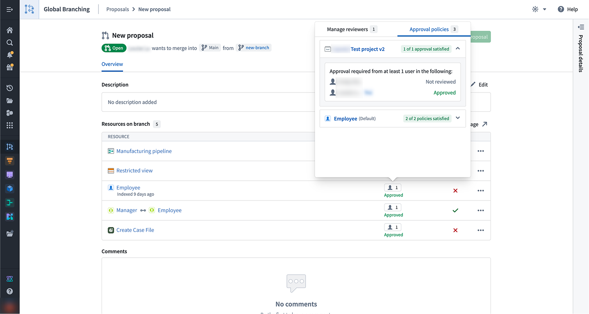

icon (branch lock) in the Compass file system.
icon (branch lock) in the Compass file system.Protecting resources through branching and approval policies ensures that all contributions are made safely and in a controlled manner. When resources are protected, changes must be submitted via branches and can only be merged after receiving approval according to the project's defined policies.
To safeguard critical workflows or maintain development best practices, you can choose to protect the main branch of your resources. Protected resources cannot be changed directly; instead, changes must be made on a branch and then approved before merging into the main branch.
A branch may include both protected and unprotected resources; however, only protected resources require changes to be made on a branch in accordance with the projectâs approval policy. Changes to unprotected resources will still require approval from a user with edit-level permissions unless specified otherwise.
Protected resources can be identified by the icon (branch lock) in the Compass file system.
Any user with owner permissions on a resource can choose to protect or unprotect that resource. Resources can be protected from your file system, individually or in bulk (by multi-selection). To protect a resource, right-click on a resource and choose Protect or Unprotect (depending on the current status). Workshop resources can also be protected from within the Workshop application by navigating to Settings and choosing the Branch protection tab.

The branch protection tab in a project serves two purposes:
Once a resource is protected, any change to that resource will have to be made on a branch and go through an approval process. The approval policy is set at the project level, and defines the approval required to merge changes to protected resources.
Choosing the default approval policy option for a project means each resource in the project is protected only by its respective default policies. For each resource, the application that owns the resource defines these policies â for example, the ontology defines default policies for object types.
These policies are typically simple: contributors and approvers must have edit access on the resource itself. Some cases are more complex. To see the exact policies for a given resource, see Viewing a resource's approval policies below.
Default policies are satisfied in one of two ways:
For example, suppose SomeResource has two default policies:
XYIn this case:
X. They modify the resource on a branch, which automatically satisfies Policy 1.Y. They review and approve the change, which satisfies Policy 2.A single user can also satisfy both policies on their own. User C has both permission X and permission Y, so they can modify the resource and merge the change without a separate approver â their permissions cover both policies.
Example project with default approval policy:

Approval policies have three customizable parameters:
Once a policy has been created on a project, it will apply immediately to all protected resources in that project when you create a branch and then a proposal. Additionally, if you update the policy to be more or less restrictive, proposals linked to that policy will be refreshed and have their status reevaluated against the new policy requirements. Only users that are owners on the project can update its custom policy.
Example project with custom approval policy:

A resource's protection status is preserved when moving resources between projects. For example:
When a protected resource moves to a new project, any change to that protected resource must be made on a branch and will be governed by the approval policy of the new project.
:::callout{theme="neutral" title="Moving a resource with an open proposal"} If a resource with an open proposal is moved to a new project, the existing proposal may take up to 1 day before the resource's policy displays the new project policy. Updating the module on the branch or attempting to merge the proposal will also trigger a refresh of the resource's policy to match the new project policy. :::
Code repositories and Pipeline Builder both have local branch protection mechanisms and approval policies. These will remain in place.
In the future, users will have the option to opt into the project approval policy for their code repositories and builder pipelines.
You can view the approval policies that apply to a resource by selecting the ð¤ button in the reviewers column on the proposal page or in the branch taskbar. This will open a popover with two tabs, Manage reviewers and Approval policies.
The Approval policies tab will show both custom policies (set at the project or the resource level) and default policies that apply to a given resource. For each policy, you will also be able to see additional information including the eligible reviewers, the number of approvals required, and whether contributor approval is allowed.

The Manage reviewers tab shows who you have requested review from and the status of the review. You can also use the edit button to add or remove reviewers.